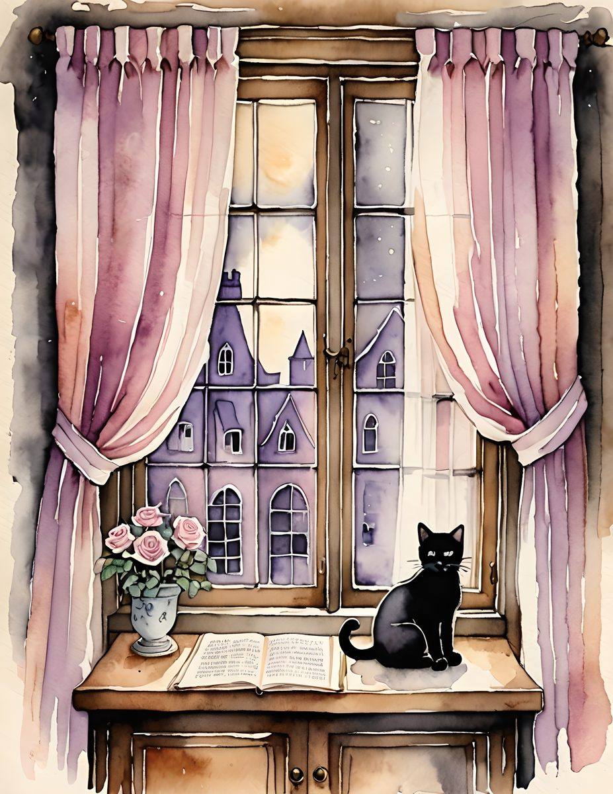
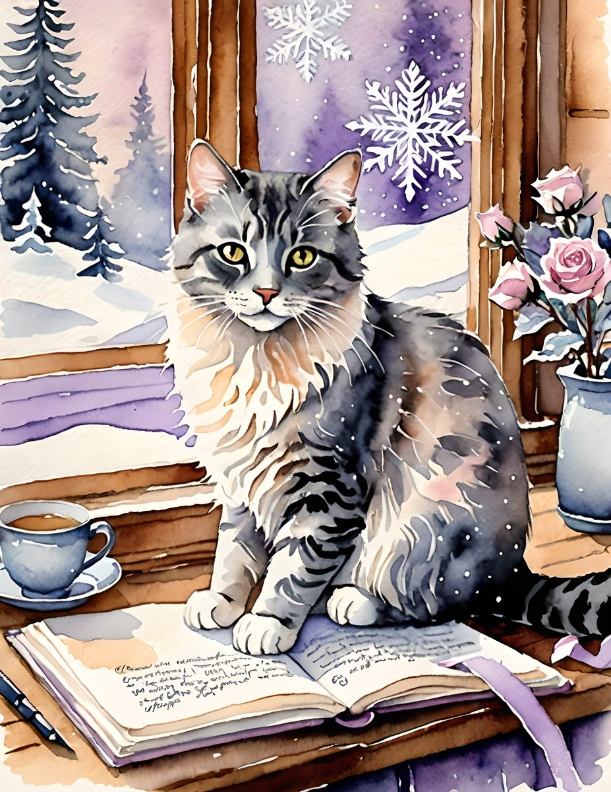

A cat theme can be soft and grown-up when the page leans into florals, shadow, butterflies, and old paper instead of novelty.




Use the cat as the mood, not the joke
Let the animal page be the focal point, then surround it with quiet scraps: lace, cream paper, a botanical label, and one dark accent.
Repeat the butterfly or floral detail
Pull one small motif from the artwork and repeat it elsewhere in the spread. That makes the page feel styled instead of themed.